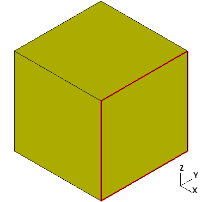
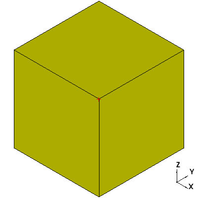

Modelling¶
- Creating Edges
- Creating Wires
- Creating Faces
- Creating Solids
- Creating Derived Shapes
- Moving, Rotating, Mirroring, and Scaling
- Boolean Operations
- Gathering Information and Miscellaneous Methods
- File Transfer
Modelling describes creating models in ccad. To understand modelling well, it’s helpful to understand how a model is described in ccad. ccad models are defined by a sequence of simpler shapes and boundaries. In CAD terminology, it’s called a Boundary Representation model, or BRep, for short. Consider a cube.

The entire cube is called a solid. A solid is made of one or more outer layers called shells. For example, if the cube had a hollow center, it would be made of two shells. One shell would define the outside of the cube. The other would define the inside. Each shell is made of one or more faces.

Each face has a single mathematical expression that defines the whole face. Planes and spheres are examples of faces. Each face is bounded by one or more wires.
The wires define the boundary of the face. Each wire is made of one or more edges.

Edges, like faces, have a unique mathematical expression that defines the entire edge. Each edge is bounded by two vertices.
Put in a hierarchy, it looks like this
- solid
- shell
- face
- wire
- edge
- vertex
ccad calls all of these shapes. Each shape has its own class in ccad. During modelling, you may need to use all of these classes. I use wire much. I use the others rarely. Usually, I’m calling a higher level function, like sphere, that instantiates a solid, or arc, that instantiates an edge.